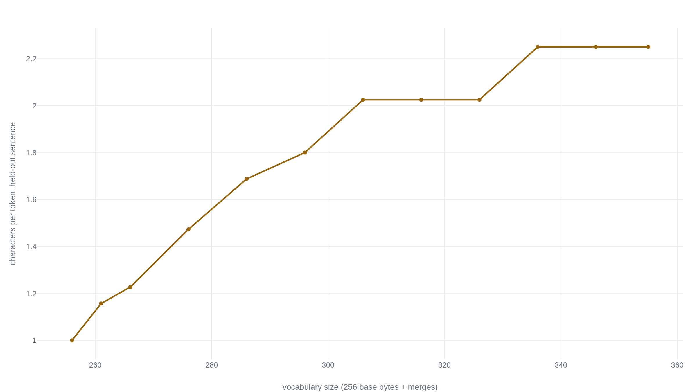

Byte-pair encoding hides the letters inside every common word a language model reads
A merge-and-count tokenizer trained from scratch on 617 bytes of text reproduces the same blind spot as GPT-2's real tokenizer, and turns the integer 2249 into four digits while leaving 2250 in three.
A single token, three syllables long
A language model never reads a sentence one letter at a time. It
reads whatever units its tokenizer decided on, long before training
started, and those units are not letters. Ask OpenAI's own
tokenizer library, tiktoken, to encode the word
" strawberry" the way it actually sits inside a sentence, space and
all, using the GPT-2 encoding:
>>> import tiktoken
>>> enc = tiktoken.get_encoding("gpt2")
>>> enc.encode(" strawberry")
[41236]
>>> enc.decode([41236])
' strawberry'
One integer. Not ten letters, not three syllables: one opaque
symbol, indivisible from the model's point of view, the same way
101 is one symbol to a program that never looks inside
it. A model asked to count the r's in that word is not reasoning
about r's at all. It is trying to recover a fact about the inside
of a token it was never shown the inside of. That gap between what
a word looks like and what a model reads is the tokenizer's doing,
not the model's. An algorithm short enough to run by hand fully
explains it: byte-pair encoding, the merge-and-count procedure
GPT-2 and nearly every large language model since has used to turn
text into the integers a model actually computes over.2
Training that algorithm on a few hundred bytes of text shows its
merge table forming step by step. Running the encoder it produces
shows exactly where the blind spot comes from, why digits split
unpredictably, and why some scripts cost far more tokens than
others to say the same thing.
Counting pairs and merging the winner
Byte-pair encoding did not start as a language model component. In 1994, Philip Gage described it as a data-compression trick. Scan a file for the most frequent pair of adjacent bytes. Replace every occurrence with one new byte that was not already in use. Repeat until the file stops shrinking.3 Rico Sennrich, Barry Haddow, and Alexandra Birch reused that same count-and-merge loop in 2016 for a different problem. A translation model built on a fixed vocabulary of whole words has no way to handle a word it never saw in training. Running Gage's algorithm over a corpus of words, rather than a single file, produces a table of subword merges instead. Rare and unseen words get spelled out of pieces the model has seen before, instead of being dropped or mapped to a single "unknown" symbol.4 That reuse is why a compression trick from a C hobbyist magazine now sits underneath GPT-2, GPT-4, and most of what has followed.
A production tokenizer runs a regex over the raw text before any merging starts. A merge can then never glue a letter to a digit or reach across certain punctuation, and special tokens (an end-of-text marker, for GPT-2) sit outside the merge table entirely.5 The build below has none of that: no pre-split, no special tokens, and a corpus of 617 bytes where GPT-2's was trained on the text of roughly eight million web pages.2 What it keeps is the part that does the actual damage to the model's view of characters and digits: byte-level counting and greedy merging. Skipping the rest keeps the code short without hiding the cause.
The whole training loop is three functions. Treat the text as a sequence of raw UTF-8 byte values, 0 through 255 to start. Count how often each adjacent pair of values occurs. Replace every copy of the single most frequent pair with one new id, and record that replacement as a merge. Repeat:
def get_stats(ids):
"""Count adjacent-pair frequencies in a token id sequence."""
counts = {}
for a, b in zip(ids, ids[1:]):
counts[(a, b)] = counts.get((a, b), 0) + 1
return counts
def merge_pair(ids, pair, new_id):
"""Replace every occurrence of `pair` in `ids` with `new_id`."""
merged = []
i = 0
while i < len(ids):
if i < len(ids) - 1 and (ids[i], ids[i + 1]) == pair:
merged.append(new_id)
i += 2
else:
merged.append(ids[i])
i += 1
return merged
def train(text, num_merges):
"""Learn `num_merges` merges from `text`. Returns the final ids, the
merge table (pair -> new id, in learned order), and the vocab
(id -> bytes)."""
ids = list(text.encode("utf-8"))
vocab = {i: bytes([i]) for i in range(256)}
merges = {}
for step in range(num_merges):
stats = get_stats(ids)
if not stats:
break
pair = max(stats, key=stats.get)
new_id = 256 + step
ids = merge_pair(ids, pair, new_id)
merges[pair] = new_id
vocab[new_id] = vocab[pair[0]] + vocab[pair[1]]
return ids, merges, vocabvocab stores what byte string each learned id spells out, built by concatenating whatever the two halves of the pair already spell.4
Running this over 617 bytes of toy text about a quick fox, a lazy dog, and a quiet river, for 60 merges, prints the vocabulary forming one pair at a time:
| Merge | Pair | Result | Seen |
|---|---|---|---|
| 0 | 'h' + 'e' | 'he' | 20 times |
| 1 | ' ' + 't' | ' t' | 18 times |
| 2 | 'he' + ' ' | 'he ' | 15 times |
| 3 | ' ' + 'a' | ' a' | 12 times |
| 4 | 'e' + 'r' | 'er' | 11 times |
| 5 | 'd' + ' ' | 'd ' | 10 times |
| 6 | ' t' + 'he ' | ' the ' | 9 times |
| 7 | 's' + ' ' | 's ' | 8 times |
| 8 | 'd' + 'o' | 'do' | 8 times |
| 9 | 'do' + 'g' | 'dog' | 7 times |
Two things are already visible that carry through everything below. First, the algorithm has no notion of "word." Merge 6 glues a leading space, the letters "the," and a trailing space into one unit, because that four-character run happened to recur more often than any competing pair. "The " is not a linguistic object here, just a frequent run of bytes. Second, frequency is everything. "dog" earns its own token by merge 9 because the toy corpus repeats it constantly. A word that appears once never accumulates enough adjacent-pair counts to merge past a couple of letters, no matter how ordinary that word is outside this corpus. Sixty merges turn the 617-byte corpus into a 316-entry vocabulary (256 raw bytes plus the 60 learned merges) and compress the training text itself from 617 bytes down to 312 tokens, exactly 1.98 bytes per token. Every one of those 312 tokens is opaque to anything downstream: a model that consumes them sees integers, never the bytes a merge was built from.
Applying the merge table to text it has not seen
Training produces a merge table. Using it on new text is a separate step, and the order matters. GPT-2's real tokenizer and Andrej Karpathy's minbpe reference implementation both replay merges in the order they were learned, not in order of frequency in the new text. That keeps encoding deterministic and in agreement with the training vocabulary.5 The same rule works here: at each step, encode finds every candidate pair present in the current sequence, picks whichever one was learned earliest, and merges it. When no remaining pair appears in the merge table, the loop stops.
def encode(text, merges):
"""Apply the learned merges, earliest-learned pair first, to new text."""
ids = list(text.encode("utf-8"))
while len(ids) >= 2:
stats = get_stats(ids)
pair = min(stats, key=lambda p: merges.get(p, float("inf")))
if pair not in merges:
break
ids = merge_pair(ids, pair, merges[pair])
return ids
def decode(ids, vocab):
"""Invert token ids back to text through the vocab's byte strings."""
raw = b"".join(vocab[i] for i in ids)
return raw.decode("utf-8", errors="replace")Running both functions on a sentence the training corpus already knows well confirms the round trip holds:
>>> text = "The quick brown fox jumps over the lazy dog."
>>> ids = encode(text, merges)
>>> ids
[273, 315, 117, 109, 112, 263, 111, 275, 262, 293, 46]
>>> len(ids), len(text)
(11, 44)
>>> decode(ids, vocab) == text
Truedecode(encode(text)) reproduces it exactly.5
Encoding and decoding are strict inverses of each other by construction: nothing about the algorithm asks whether a merge corresponds to a real morpheme, a whole word, or an arbitrary run of bytes that happened to co-occur. That is also why the omitted regex split matters more than it looks. Without it, a merge can glue a space onto the front of a word, as merge 6 already did, onto a digit, or across a sentence boundary the training corpus repeats often enough. GPT-2's real pre-tokenizer exists specifically to stop letters from ever merging with digits in the first place, a boundary this toy build does not enforce.5
A word the corpus barely saw, and one it never stopped seeing
Feed the unfamiliar word "strawberry" through the same 316-entry vocabulary trained above and the merges run out almost immediately, because "straw" and "berry" never occurred in the 617-byte corpus:
>>> ids = encode("strawberry", merges)
>>> ids
[281, 114, 97, 119, 98, 260, 114, 121]
>>> [vocab[i] for i in ids]
[b'st', b'r', b'a', b'w', b'b', b'er', b'r', b'y']That is what an under-trained vocabulary does to a rare word: it falls back toward individual letters, and the letters stay visible. GPT-2's actual byte-level vocabulary, trained the same way but on roughly eight million web pages instead of 617 bytes, has the opposite problem with the opposite word.2 "Strawberry" is common enough in running text that its space-prefixed form merged all the way down to one token, shown already in Fig. 1: id 41236, decoding back to " strawberry" whole. "Because," similarly common, is a single token both with and without a leading space.6 Rare words fragment toward characters. Common words compress past the point where characters are visible at all. A model built on this tokenizer can infer the spelling of a rare word from its pieces, because those pieces are close to letters. It cannot infer the spelling of a common one, because its single token carries no internal structure for the model to read.6 The failure runs backward from what intuition expects: the words a speaker would call easy are exactly the ones the tokenizer has made opaque.
GPT-2's vocabulary operates on raw bytes rather than characters for a specific reason unrelated to spelling. A character-level vocabulary has to enumerate every Unicode code point it might ever meet. A byte-level one only ever needs 256 base symbols, so it can represent any string in any script without a single "unknown" token. The cost is needing more merges to reassemble scripts outside its training distribution.2
Merging digits by frequency, not by place value
A merge table has no concept of tens, hundreds, or a base-ten place. It only knows which byte pairs recurred often enough to earn a slot, so two integers that are one apart can tokenize into a different number of pieces, split at different points, for no reason connected to their value:
>>> for n in ["2249", "2250", "2251", "2252", "1994", "2016", "50257"]:
... ids = encode(n, merges)
... print(n, "->", [vocab[i] for i in ids])
...
2249 -> [b'2', b'2', b'4', b'9']
2250 -> [b'2', b'25', b'0']
2251 -> [b'2', b'25', b'1']
2252 -> [b'2', b'25', b'2']
1994 -> [b'1', b'9', b'9', b'4']
2016 -> [b'201', b'6']
50257 -> [b'5', b'0', b'25', b'7']
The same inconsistency is not a toy-scale artifact. Running the
real GPT-2 encoding through tiktoken on the identical
four integers reproduces the same pattern, against a vocabulary
fifty thousand times larger:
>>> enc = tiktoken.get_encoding("gpt2")
>>> for n in ["2249", "2250", "2251", "2252"]:
... print(n, "->", [enc.decode([t]) for t in enc.encode(n)])
...
2249 -> ['2', '249']
2250 -> ['22', '50']
2251 -> ['225', '1']
2252 -> ['225', '2']Beren Millidge first reported the 2249-through-2251 splits in 2023, alongside two separate facts about GPT-2's number tokens: every integer from 0 through 521 gets its own token, and, separately, almost a tenth of the first ten thousand integers do.7 A model trained on tokens like these has to learn multiplication and carrying as a lookup problem specific to whichever split each number happened to receive, rather than as one consistent procedure over digits. Zhang, Cao, Wei, Xu, and You formalized why that is not merely inconvenient. A tokenization scheme that scrambles place-value boundaries removes the structural information an arithmetic procedure needs to track position across a number. That limit sits closer to what a counter machine cannot compute than to a fixable performance gap.8 The fix, when researchers have tried one, is to stop treating digits like ordinary text. Chetverina's triadic suffix scheme groups digits into fixed three-digit blocks and tags each block with an explicit magnitude marker, trading the byte-pair merge table's frequency-driven splits for a tokenization rule that always respects place value.9 That it takes a dedicated scheme to fix confirms the underlying claim: ordinary byte-pair encoding was never designed to preserve arithmetic structure, and every model built on it inherits that gap by default.
Paying for a bigger vocabulary
Every merge added to a vocabulary shortens the average sequence length on text similar to what was trained on. The toy corpus shows the curve directly: truncate its merge table to the first N entries and re-encode one 81-character sentence the training corpus never saw, "The lazy fox and the quick dog live by the quiet river near a small room in 2016." Zero merges, a 256-symbol, purely byte-level vocabulary, needs one token per character. The full 99 merges this 617-byte corpus supports before it runs out of repeated pairs compresses the same sentence to one token for every 2.25 characters.

That compression is not free, and it is not distributed evenly. Every merge is trained on a particular corpus, so the tokens it buys are cheap for text that resembles that corpus and expensive for text that does not.4 GPT-2's training data was overwhelmingly English, so its merges are overwhelmingly English merges. Independent measurements of modern byte-level tokenizers put Mandarin at roughly 1.8 times the tokens of equivalent English text, Japanese at roughly 2.1 times, and Korean at roughly 2.4 times, though a single Japanese sentence can run as high as 8 times English depending on its content. Arabic, Hindi, and Burmese run 3-to-4 times English, and a handful of under-resourced scripts run 12 times or higher.10 A short sentence encoded here with the toy vocabulary shows the same direction on a corpus of a few hundred bytes. "The quick fox" costs 5 tokens for 13 characters in English, 0.38 tokens per character. The same idea in Korean, "빠른 여우," costs 13 tokens for 5 characters, 2.60 tokens per character, because none of those Korean byte sequences were ever frequent enough in training to earn a merge. The cause traces to which corpus the merges were counted from, not the script itself. A tokenizer's vocabulary is a record of what recurred in its training text, and any language underrepresented there pays in tokens for every document it appears in. That cost shrinks as the training corpus grows more multilingual,10 and does not otherwise go away.11
A large, frequency-built vocabulary carries one more cost that has nothing to do with compression. Some of GPT-2's 50,257 tokens exist because a string recurred often enough somewhere in its training data, repeated Reddit usernames, in the best-known case, to earn a merge. That same string never recurred often enough during the model's own training to receive a well-formed internal representation. Prompt the model to repeat one of these tokens and it produces hallucinated, off-topic, or refused output instead, a class of vocabulary entry now called a glitch token.12 Wu, Gao, Wang, Zhang, Liu, and Lian's gradient-based search systematically locates these tokens across ten large language models spanning five model families, without needing a hand-built list of candidates first.13 That same pattern belongs to the same trade-off as the compression curve above. A vocabulary built purely by counting frequency in one corpus merges whatever recurred there, whether or not the resulting token ever recurs in the data the model is actually trained on.
- The merge-and-count loop above is the real algorithm, not a simplification of it: GPT-2's tokenizer and the reference minbpe implementation run the identical count-merge-repeat procedure, just over a much larger byte-level corpus.5
- Encoding by replaying merges in learned order, and decoding by concatenating each id's stored bytes, is exactly how a production byte-level BPE tokenizer round-trips text.5
- Every downstream failure demonstrated above, letter invisibility, digit fragmentation, and script cost, follows from the same two properties: byte-level counting and frequency-driven merging, both present in the 30 lines above.
- No regex pre-split means merges here can cross letter-digit and word-punctuation boundaries that GPT-2's real pipeline blocks by construction.5
- No special tokens: a production tokenizer reserves ids like GPT-2's end-of-text marker outside the merge table; this build has none.2
- Scale changes magnitude, not direction. 617 bytes and 99 merges show the same fragmentation and cost patterns as 50,257 tokens trained on roughly eight million pages. The exact splits and the exact multipliers stay specific to whichever corpus trained the vocabulary.4
None of that is a flaw introduced by careless training. It is what the algorithm was asked to do: shrink a corpus by replacing whatever recurs most, without regard for what a letter, a digit, or a script means to the humans reading the result. A model that reads only the integers that procedure produces inherits every consequence of that indifference, and inherits none of the ability to look inside a token and check.
Sources
- OpenAI · tiktoken — Fast BPE Tokenizer Reference Implementation
- Radford, Wu, Child, Luan, Amodei, Sutskever · "Language Models are Unsupervised Multitask Learners" (GPT-2)
- Gage, Philip · "A New Algorithm for Data Compression," C Users Journal (1994)
- Sennrich, Haddow, Birch · "Neural Machine Translation of Rare Words with Subword Units" (2016)
- Karpathy, Andrej · minbpe — Minimal BPE Implementation
- "BPE vs Byte-level Tokenization: Why LLMs Struggle with Counting" — SOTAAZ (2025)
- Millidge, Beren · "Integer tokenization is insane" (2023)
- Zhang, Cao, Wei, Xu, You · "Tokenization Constraints in LLMs: A Study of Symbolic and Arithmetic Reasoning Limits" (2025)
- Chetverina, Olga · "A Triadic Suffix Tokenization Scheme for Numerical Reasoning" (2025)
- "The Multilingual Token Tax: What Building AI for Non-English Users Actually Costs" — TianPan (2026)
- "LLM Tokenization Explained: English vs Other Languages Cost Difference" — PromptCost.org (2026)
- NiluK · "SolidGoldMagikarp" — Glitch Token Research Collection (2023)
- Wu, Gao, Wang, Zhang, Liu, Lian · "GlitchMiner: Mining Glitch Tokens in Large Language Models via Gradient-based Discrete Optimization" (2024)